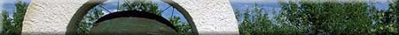
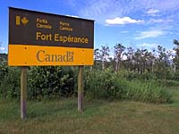
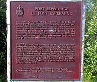
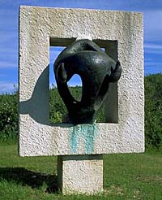
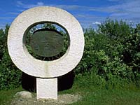
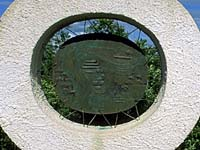
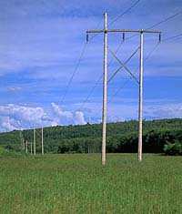

|
|
"Environmentally Sensitive Area". Please be careful where you walk and try not to disturb the natural environment. For additional information please contact Tourism Saskatchewan. | ||
| Fort Esperance | |||
| GPS: | 50d 29.51m N | 101d 34.65m W | 1206 feet |
| Location: | 22 kms northeast of Rocanville. | ||
 From 1787 to 1820, the lower Qu'Appelle valley played an important role in the fur trade of the northwest. Although far from the fur yielding forests to the north, the valley was adjacent to the prairies where great herds of bison abounded. Here the North West Company located its chief pemmican provision post for the Assiniboine River district. Fort Esperance, not withstanding several relocations, was one of the company's most important posts on the Qu'Appelle River until its operations ceased in 1819. Robert Grant, a partner of the newly-formed North West Company, built Fort Esperance in 1787 on the flats by the river, east of where the commemorative monument now stands. The Bourgeois, or partner, in charge of the district usually made his headquarters here. Although most of the site now lies in a ploughed field, a few depressions -- indicating cellars -- are still visible. This was the first post, of which there is any record, on the Qu'Appelle River. From 1801-05 the post received competition from a rival XY Company fort, a mile down-river, also on the south bank. Fort Esperance remained at its original location until about 1810 when John McDonald of Garth moved the department headquarters to a site on the Qu'Appelle lakes, the exact location of which is still undetermined. In 1814 the North West Company again moved to a location on the north bank of the river, two miles west of Big Cut Arm Creek, naming it Fort John. Fort John served as a point of departure for Cuthbert Grant's attack on the Selkirk settlers and is now a provincial historic site. | |||
 In 1816 at the height of the conflict, the NorWesters, after burning the Hudson's Bay Company fort, which stood a few hundred yards away, moved back to within 300 yards of the original 1787 site. The Hudson's Bay Company people re-established their post on the Assiniboine River, just above Beaver Creek. The second Fort Esperance was built on the knoll higher up on the bank to better overlook the Qu'Appelle valley. The location put the fort in a strong defensive position, necessary in those troubled times. Cellar and fireplace remains can still clearly be seen on this site; a depression around the remains indicates where the stockade once stood. In 1819, Indian hostility apparently caused the North West Company to abandon the Qu'Appelle valley and rebuild on the Assiniboine, within a few hundred yards of the Hudson's Bay Company Beaver Creek fort. The post continued to operate there until 1821 when the two rival companies amalgamated. A single post was then maintained until 1824, when Simpson declared the lower Qu'Appelle region to be uneconomical. Until 1831, when Fort Ellice was built, there were no posts in this region. | |||
 Fort Esperance was a provision post, and, as such formed a vital link in the northern fur trade. Each year it sent down large quantities of pemmican -- a mixture of dried and pounded meat and melted fat tightly packed in hide sacks (taureaux) of approximately 90 pounds each -- to the provision depot. Bas de la Riviere (later Fort Alexander), on Lake Winnipeg. Depots such as Bas de la Riviere provided pemmican for the brigades going to and from the Athabasca and Churchill regions bringing their beaver and other pelts down to the North West Company headquarters on Lake Superior in the spring and returning with supplies before winter. Pemmican was the staple food supplied to the incoming and outgoing fur brigades; it was compact, nourishing, relatively non-perishable and, with berries added, almost palatable. Without it, the fur traders could not have tapped the rich fur resources of the northern forests. The bison was the principal source of pemmican. In the winter months, hunters from the fort, often Metis, would bring in fresh bison meat which, if not eaten, would be dried, pounded and made into pemmican; usually by their wives. Another important supplier was the Plains Indian. Assiniboine and Cree would bring dried and pounded meat, grease, buffalo hides and often some furs to Fort Esperance in exchange for spirits, tobacco, guns or ammunition. Because the plains animals, especially the bison, provided most of their needs, it was only by means of these "luxury goods" that the Plains Indians could be induced to hunt for the trader. Later on, woolen clothing became an important trade item. | |||
 In the spring, when the rivers were free of ice, the canoes and boats would be loaded up with the pemmican and pelts amassed during the winter and would set off for Lake Winnipeg, not to return until the fall. A few men would be left behind to watch the fort and horses and to tend to the garden which supplied the fort with potatoes, onions, and other vegetables. The Qu'Appelle valley was a major supplier for the Assiniboine region, and along with the Red River region, was the most important source of pemmican for the North West Company. This essential source was threatened when the area fell within the land granted in 1811 to Lord Selkirk for settlement. In due course a conflict, known as the Pemmican war broke out and the North West Company's Qu'Appelle post was inextricably drawn into it. | |||
 The monument with its plaque to mark this National Historic Site has been placed on a small knoll between the two sites of Fort Esperance overlooking the valley, following the recommendation of the Historic Sites and Monuments Board of Canada. Directly behind, to the south, is the larger knoll where the last Fort Esperance stood and just below, to the east, the site of the first Fort Esperance. This monument was conceived and executed by a native Saskatchewan sculptor, John Nugent of Lumsden. He has, through the arrangement of the three pieces and the use of concrete given the monument a fort-like and protective air. Individually, the sculptures also tell a story. The bronze bison head set in a concrete square, symbolizing again, the strength of the fort, looks to the north-west where the bison was vitally linked to the fur trade. Directly opposite is depicted a beaver hide in bronze, set in a concrete stretcher. The beaver hide represents the fur trade which was dependent on the food resources of the prairies. On each side of the hide is a pictoglyph. The side facing in shows the components of the early fur and pemmican trade: fort, canoes, map of the river, bison and implements for making pemmican, bales of furs, sundance poles used by the Indians, and so on. The outer one is taken from an early Indian pictograph which depicted the Indian receiving strength and power from the bison through an umbilical cord. | |||
 In the centre between the other two sculptures, is a rectangular column with the name of the fort, ''ESPERANCE'' cast in low relief on the back and the Parks Canada (Historic Sites and Monuments Board) plaque affixed on the front face. Special thanks is extended to Mr. Arthur G. Kelly of Spy Hill, an early resident, whose efforts have done much in obtaining recognition for Fort Esperance. | |||